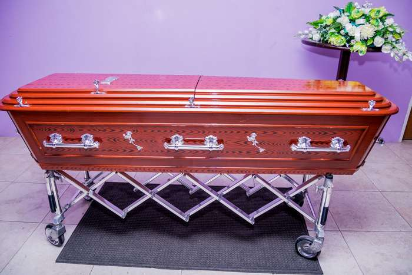
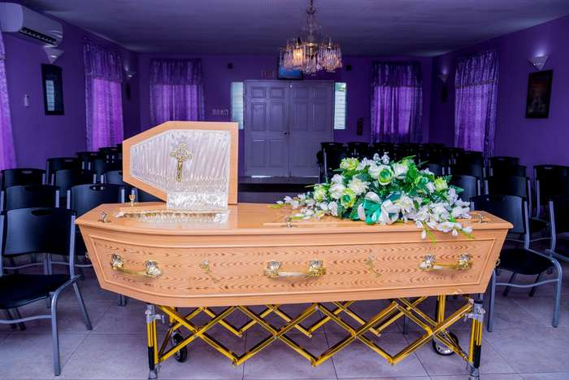
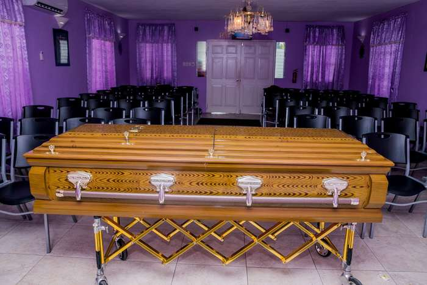
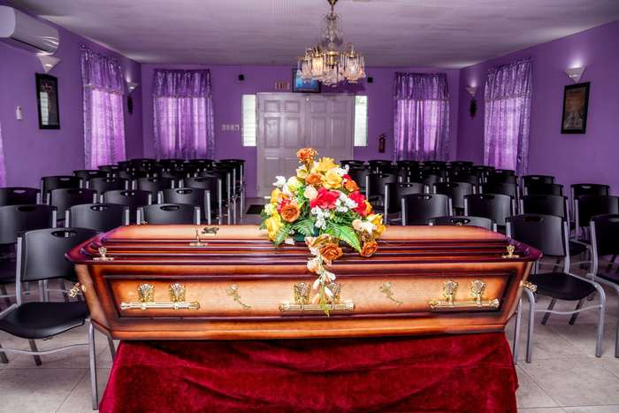
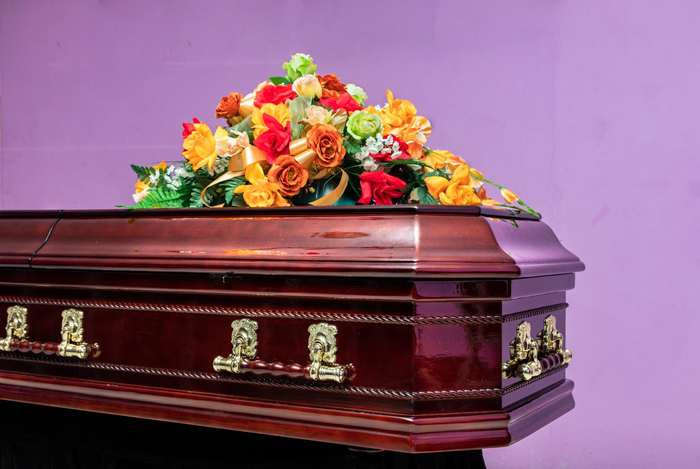
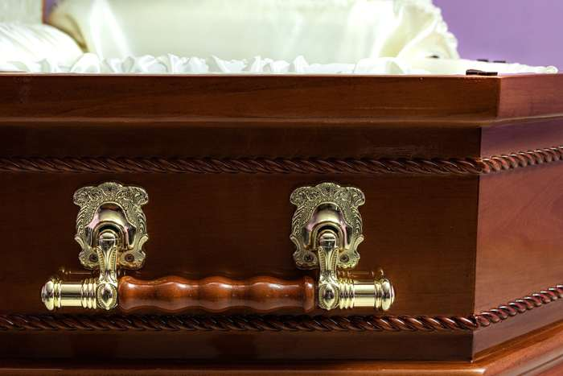

Cherry
Cherry finish. Select the photo to view both closed and open views.
Ask about this style: CherrySelect any casket photo to view its closed and open presentation.
Cherry finish. Select the photo to view both closed and open views.
Ask about this style: CherryDark mahogany finish. Select the photo to view both closed and open views.
Ask about this style: Dark mahoganyRed mahogany finish with silver handles. Select the photo to view both closed and open views.
Ask about this style: Red mahogany with silver handlesHoney oak finish. Select the photo to view both closed and open views.
Ask about this style: Honey oakLilac metal casket. Select the photo to view both closed and open views.
Ask about this style: Lilac metal
Flame-grain wood finish. Select the photo to view both closed and open views.
Ask about this style: Flame grain
Light oak finish with crucifix detail. Select the photo to view both closed and open views.
Ask about this style: Light oak crucifix
Golden oak finish. Select the photo to view both closed and open views.
Ask about this style: Golden oak
Two-tone mahogany finish. Select the photo to view both closed and open views.
Ask about this style: Two-tone mahoganyCraftsmanship
A closer look at selected trim and handle details available across the collection.


Whenever you need us
When a death occurs, call us at any hour. A member of our team will tell you exactly what happens next.